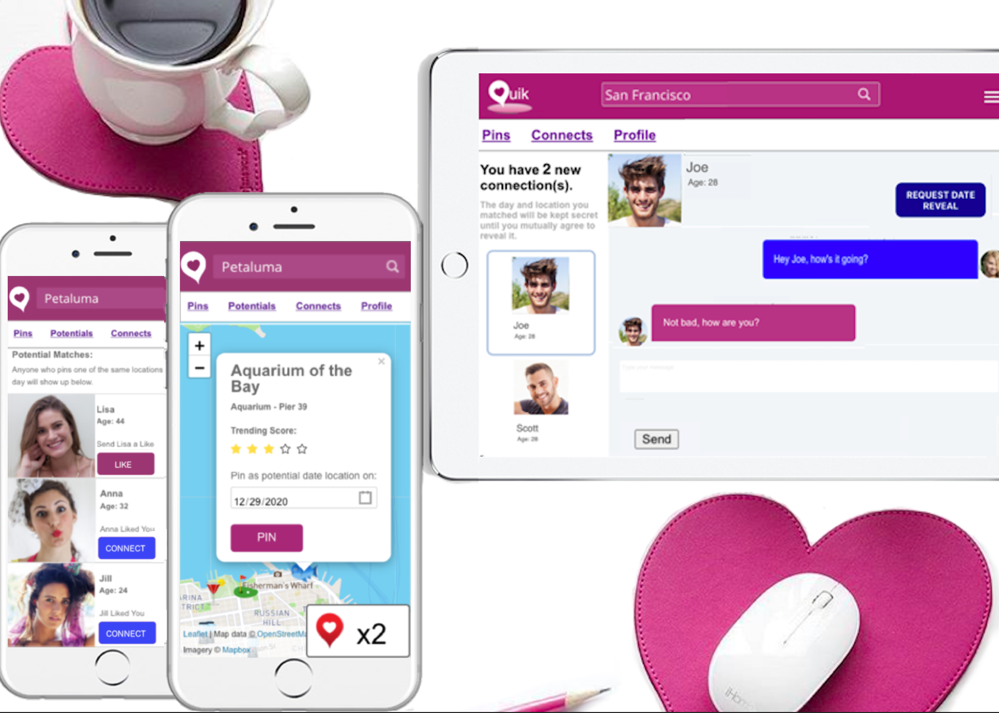
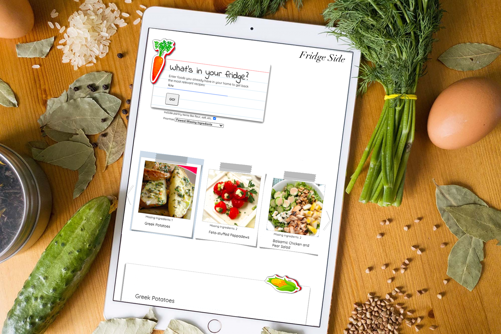

Hello
I'm Louis, a software developer with a background in art, creative writing, and philosophy.
About Me
As a degree holder in philosophy, I've gained a theoretical framework for topics related to computer and behavioral science including:
- Plato's theory of forms, which would later become the origins of object inheritance.
- Concept theory (which deals with abstraction and prototypal inheritance).
- Formal logic systems like symbolic logic.
- And various other topics related to aesthetics, consciousness, language, and meaning.
When I'm not coding or designing, you're likely to find me involved in other creative pursuits, or playing a game of pick up basketball.
What follows is my 100% original work - from concept to implementation.
Darkhorse - Daily Fantasy Sports
Native IOS Development with XCode, Swift5, MVC architecture, & OOP. Serverless Backend Architecture with Google Cloud Functions, Typescript, & Firestore DB.

With traditional daily fantasy sports, the goal is to build a fantasy team of players on a single game basis, while keeping your budget under a given ‘salary cap’.
With Darkhorse, you’re also given a salary cap, but instead of drafting a full team, you draft a single player, then use what’s left of your salary cap to buy additional game stats.
If you draft an inexpensive ‘dark horse’ player, you’ll keep more of your remaining salary cap for stat buying.
This gives lesser players a better chance at victory.
Spend wisely and you'll help your player hit key achievements that boost his score above the competition.


Darkhorse has up to the minute scoring and features similar to other venture backed DFS companies, all built with web scraping - a true hacker project! Live for 2020-2021 NBA basketball season
Install Beta with TestFlight (I can share source code privately if the beta has expired)Typescript Cloud Functions Repo
Wordpress Landing Page
Darkhorse 1.0 & 2.0
Native Android with Android Studio, Java, MVC architecture, OOP, and Firebase.

Before developing the 'final' version for IOS, I developed at least 3 prototypes while learning Android and Java. Here are two that still compile with Android Studio.
Android 2.0 RepoAndroid 1.0 Repo
Spiral - Time-Tracking, Productivity.
React, Node.js, Express, PostgreSQL, & Apex Charts.

Spiral is perhaps the first time tracking software that is designed to help you work more efficiently.
Start by estimating a time frame for your task, then work towards coming in under your estimate.
Use Spiral to track and improve your time efficiency at anything you'd like.
Use it regularly while you work to take advantage of inbuilt time tracking, break management, and productivity insights.
Blog Post: Why Spiral Will Change Time Tracking Forever.Live Site
React Client Repo
Node/Express Server Repo
Quik - Dating, Meetup.
React (with Hooks), Node.js, Express, Socket.io, PostgreSQL, and Leaflet Maps.

Quik is what online dating should have been from the beginning.
Instead of swiping endlessly (like with Tinder and its 1000 clones), with Quik you pin locations you're already interested in going to and then start to look for potential matches from there.
To add to the mystery (and also provide a layer of security), you won't know the exact location you matched with anyone until you mutually agree to reveal it.
It's designed for a simple, fun, and serendipitous user experience.
Live SiteReact Client Repo
Node/Express Server Repo
Lightning Algo - Study
Redux, React Hooks, Node.js, Express, Postgres, and React Beautiful Drag and Drop.
Because why not study for tech interviews in style?
Similar to a word jumble game, Lightning Algo randomizes the lines of an algorithm, and lets you drag them back into the correct order.
With Lightning Algo, the name of the game is speed. Create custom lists of algorithms, then work on cycling through and descrambling them quickly to beat your previous best times.
Lightning Algo gives you a way to quickly and actively review any algorithms that you need to know for work or an upcoming interview.
LiveClient Repo
Fridge-Side
HTML, CSS, jQuery, Node.js, Express, Twillio, and the Spoonacular API

Fridge-side is a recipes search app that lets you find new recipes based on ingredients you already have in your home.
After adding missing ingredients to a shopping list, Fridge-side lets you send the list to your phone via SMS for easy access next time you're grocery shopping.
To make it more memorable, it's styled like notes on the side of a refrigerator.
Go ahead and give it a try!
Live SiteClient Repo
That's it for now, if you like my work don't hesitate to reach out.
Email Me